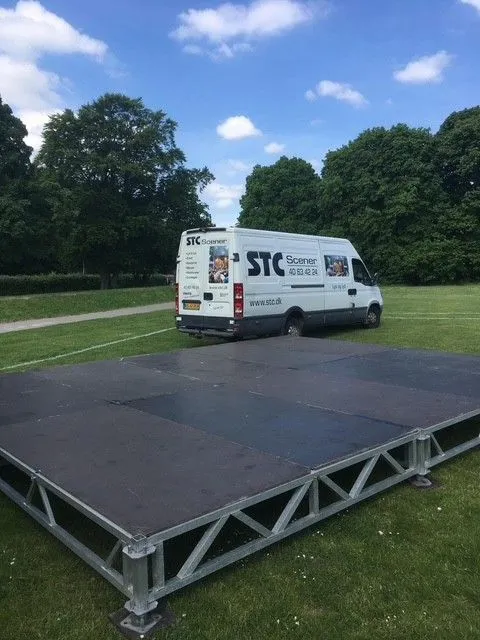
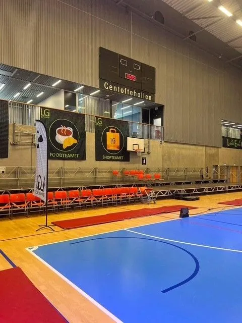
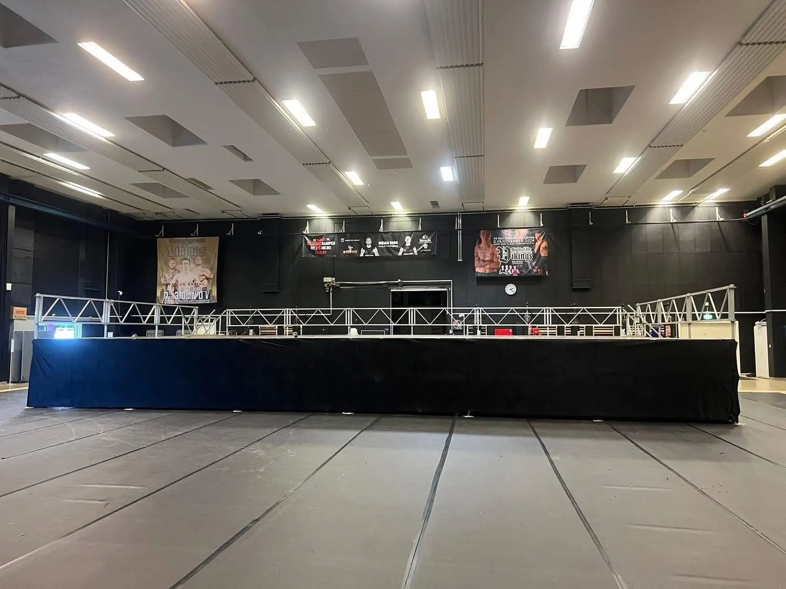
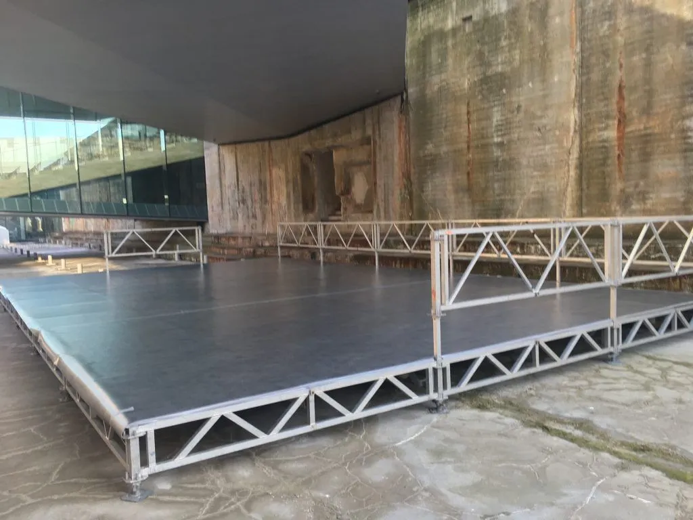

Scenegulve & Podier
Scenegulve og podier
STC udlejer scenegulv med og uden overdækning. Højden kan justeres fra 35 cm til 2 m. Vi råder over i alt 700 kvm scenegulv.
Scenegulve & Podier
STC udlejer scenegulv med og uden overdækning. Højden kan justeres fra 35 cm til 2 m. Vi råder over i alt 700 kvm scenegulv.
Lej hos STC
STC udlejer scenegulv med og uden overdækning. Højden kan justeres fra 35 cm til 2 m. Vi råder over i alt 700 kvm scenegulv. Lej scenegulv hos STC.
Spar penge når du skal leje scenegulv — prøv STC for et godt tilbud. 40 63 42 24 — STC kommer over hele landet. STC har alt hvad du skal bruge.
Du kan altid få et tilbud, hvor I selv henter her hos STC — fortæl os hvor meget du skal bruge, og vi finder en fornuftig pris.
STC opbygger små og store catwalk til modeshow og messer. Catwalk der kan udføres i mange forskellige udformninger og størrelser. STC lejer runde scener ud — også halvrunde scener og scener i andre udformninger.
STC kan lave Catwalk på 400 m i gågade til sommerevent.
Ring til STC 40 63 42 24 næste gang du skal have modeshow.




Læs om vores
STC udlejer tribuner af forskellig størrelse — også mobile tribuner. Ring og få et tilbud fra STC 40 63 42 24.
Fair priser
Prisen pr. døgn kan variere.
Det kommer lidt an på hvilket tilbehør du skal bruge, hvor du skal bruge det og hvor meget arbejde, der er i at sætte det op og tage det ned.
Få et godt tilbud fra STC, hvor vi kommer med det og laver det hele for dig. Husk vi kan lave det i mange mål.
Ring og få et godt tilbud der passer til jer. Mange vil gerne spare penge, og det kan du også gøre, hvis du selv vil hjælpe til eller afhente her hos STC.
Skal du bruge det i flere døgn, finder vi et godt tilbud. Du kan vælge at lade os lave det hele for dig, eller du kan spare penge ved selv at hjælpe til.
Køb eller lej
Køb eller lej dine nye scenepodier hos STC 40 63 42 24 — vi har arbejdet med det her i over 30 år og ved, hvor vigtigt det er at du får lige netop det du har brug for.
Mange vil gerne spare penge, og det kan du også gøre, hvis du selv vil hjælpe til eller afhenter her hos STC.
Vi giver meget gerne et godt tilbud på scenegulv og kan lave mange forskellige løsninger — lad os tage en snak om det.
Skal du bruge det i flere døgn, finder vi et godt tilbud. Du kan vælge at lade os lave det hele for dig, eller spare penge ved selv at hjælpe til.
Husk vi også har alt i lyd, lys og AV-løsninger. Scenegulvet kan evt. leveres med stof i forskellige farver til inddækning af forkant — ligesom der kan leveres forskellige former for gulvtæppe.
Mange vil gerne spare penge, og det kan du også gøre, hvis du selv vil hjælpe til eller afhenter her hos STC.
Vi giver meget gerne et godt tilbud på scenegulv og kan lave mange forskellige løsninger — lad os tage en snak om det.
Skal du bruge det i flere døgn, finder vi et godt tilbud. Du kan vælge at lade os lave det hele for dig, eller spare penge ved selv at hjælpe til.
Husk vi også har alt i lyd, lys og AV-løsninger. Scenegulvet kan evt. leveres med stof i forskellige farver til inddækning af forkant — ligesom der kan leveres forskellige former for gulvtæppe.
Vi er leveringsdygtige i catwalk til alle former for events. Ring for at høre hvad vi kan tilbyde til netop din event eller dit modeshow.
Gulvtæpper i forskellige farver mod merpris lægges på.
Vi er dig behjælpelig med alle former for udstillinger — både på messer, julearrangementer, firmafester og konferencer. Vi leverer totalløsninger som f.eks. også indeholder multimedialøsninger.
Ring direkte til Morten Lind — eller send os en besked, så vender vi hurtigt tilbage.